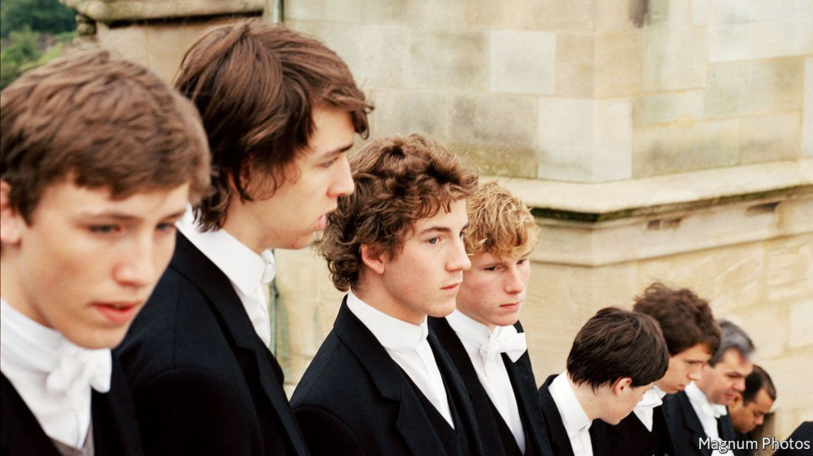

Text
2021-09-08T12:46:20+00:00
Sad little men
悲伤小男人
悲傷小男人
Britain’s private schools are lambasted in Richard Beard’s book
理查德·比尔德的新作痛斥英国私立学校
理查德·比爾德的新作痛斥英國私立學校
Assessing the impact of an elite education
评估一种精英教育的影响【《悲伤小男人》书评】
評估一種精英教育的影響【《悲傷小男人》書評】

AS ITS SUBTITLE promises, this book is an uncompromising denunciation of Britain’s private schools. They offer their charges a Faustian bargain, says Richard Beard: the tools of success (principally fluency and self-confidence) in return for emotional impoverishment. He knows whereof he speaks: in 1975 he was sent from home to a new life sleeping in dormitories and climbing hierarchies, much like David Cameron and Boris Johnson.
从副标题就看得出，这本书无情鞭笞了英国的私立学校。理查德·比尔德（Richard Beard）说，这些学校为自己的照管对象提供了一种浮士德式的交易：用情感上的贫乏换取成功的手段（主要是流利的表达和自信）。对此他深有体会：1975年他被从家里送到一个新的生活环境，睡宿舍，沿等级的阶梯向上爬，和大卫·卡梅伦和鲍里斯·约翰逊的经历很像。
從副標題就看得出，這本書無情鞭笞了英國的私立學校。理查德·比爾德（Richard Beard）說，這些學校為自己的照管對象提供了一種浮士德式的交易：用情感上的貧乏換取成功的手段（主要是流利的表達和自信）。對此他深有體會：1975年他被從家裡送到一個新的生活環境，睡宿舍，沿等級的階梯向上爬，和大衛·卡梅倫和鮑里斯·約翰遜的經歷很像。
This argument is far from original; lambasting public schools for tormenting their inmates and ruining the country is one of Britain’s oldest traditions. (In England and Wales private schools are confusingly known as “public schools”; they themselves prefer “independent schools”.) Thomas Macaulay, a Victorian historian and politician, avoided them after a family friend told his mother that “throwing boys headlong into those great public schools always puts me in mind of the practice of the Scythian mothers, who threw their new-born infants into the river.”
这种说法绝非比尔德首创：痛斥公学折磨“囚犯”学生和葬送国家是英国最悠久的传统之一。（在英格兰和威尔士，私立学校被令人费解地称作“公学”，而它们自己更喜欢被叫做“独立学校”。）维多利亚时期的历史学家和政治家托马斯·麦考莱（Thomas Macaulay）家里的一位朋友跟他的母亲说，“把男孩子扔进那些名牌公学总让我想起做了母亲的斯基泰人，她们会把新生的婴儿扔到河里。”自此他对公学避之不及。
這種說法絕非比爾德首創：痛斥公學折磨“囚犯”學生和葬送國家是英國最悠久的傳統之一。（在英格蘭和威爾士，私立學校被令人費解地稱作“公學”，而它們自己更喜歡被叫做“獨立學校”。）維多利亞時期的歷史學家和政治家托馬斯·麥考萊（Thomas Macaulay）家裡的一位朋友跟他的母親說，“把男孩子扔進那些名牌公學總讓我想起做了母親的斯基泰人，她們會把新生的嬰兒扔到河裡。”自此他對公學避之不及。
In the 20th century Evelyn Waugh quipped that “anyone who has been to an English public school will always feel comparatively at home in prison.” Goronwy Rees, a journalist, wrote of the public-school boys he encountered at Oxford that they “were all well-taught at school and what they understood they understood very well; what they did not understand included almost everything which would change the world in their lifetime”. Two of the best books about the classic public school (both by T. C. Worsley, a former schoolmaster) are entitled “Barbarians and Philistines” and “Flannelled Fool”.
20世纪，伊夫林·沃（Evelyn Waugh）曾调侃道：“任何上过英国公学的人，去监狱总会感觉更像家一些。”记者哥伦威·里斯（Goronwy Rees）谈到他在牛津遇到的公学男孩时写道，他们“在学校都受过良好的教育，对于自己懂的事情那真是了如指掌；若说他们有什么不懂的，那么对那些会在他们有生之年改变世界的事他们几乎一无所知”。关于老牌公学最好的书有两本都出自担任过公学校长的T. C.沃斯利（T. C. Worsley）之手，一本叫《野蛮人与非利士人》（Barbarians and Philistines），另一本是《穿法兰绒的傻瓜》（Flannelled Fool）。
20世紀，伊夫林·沃（Evelyn Waugh）曾調侃道：“任何上過英國公學的人，去監獄總會感覺更像家一些。”記者哥倫威·里斯（Goronwy Rees）談到他在牛津遇到的公學男孩時寫道，他們“在學校都受過良好的教育，對於自己懂的事情那真是了如指掌；若說他們有什麼不懂的，那麼對那些會在他們有生之年改變世界的事他們幾乎一無所知”。關於老牌公學最好的書有兩本都出自擔任過公學校長的T. C.沃斯利（T. C. Worsley）之手，一本叫《野蠻人與非利士人》（Barbarians and Philistines），另一本是《穿法蘭絨的傻瓜》（Flannelled Fool）。
Updating these criticisms, Mr Beard makes some striking points about the way “total institutions” (a phrase he borrows from the sociologist Erving Goffman) can reconstruct the human personality. The aim of public schools is to make people fit in effortlessly with the changing rules and rituals of the tribe. They do this by removing children from their natural environments, then forcing them to play a succession of different roles. “We were post-modernism come to life,” he writes. “We had our different ‘I’s’, some more made-up than others, customised as required because we didn’t have the peace or privacy to become ourselves in our own time.” Thus Alexander Johnson became Boris, Eric Blair became George Orwell, and Philby, Burgess and Maclean became Soviet agents.
比尔德更新了这些批评，对“全控机构”（total institution，借自社会学家厄文·高夫曼[Erving Goffman]之语）如何有可能重建人格提出了一些惊人的观点。公学的目的是让人轻松自如地适应所在群体不断变化的规则和仪式。它们采用的方法是将孩子从自然的环境中带走，然后强迫他们扮演一连串不同的角色。“我们就是活生生的后现代主义的化身，”比尔德写道，“我们有着不同的‘我’，有些‘我’比其他的‘我’更虚假。我们会根据需要改换面目，因为我们不能在安宁私密的状态下按自己的步调成为自己。”就这样，亚历山大·约翰逊成了鲍里斯·约翰逊，埃里克·布莱尔成了乔治·奥威尔，费尔比、伯吉斯和麦克林成了苏联特工。
比爾德更新了這些批評，對“全控機構”（total institution，借自社會學家厄文·高夫曼[Erving Goffman]之語）如何有可能重建人格提出了一些驚人的觀點。公學的目的是讓人輕鬆自如地適應所在群體不斷變化的規則和儀式。它們採用的方法是將孩子從自然的環境中帶走，然後強迫他們扮演一連串不同的角色。“我們就是活生生的後現代主義的化身，”比爾德寫道，“我們有着不同的‘我’，有些‘我’比其他的‘我’更虛假。我們會根據需要改換面目，因為我們不能在安寧私密的狀態下按自己的步調成為自己。”就這樣，亞歷山大·約翰遜成了鮑里斯·約翰遜，埃里克·布萊爾成了喬治·奧威爾，費爾比、伯吉斯和麥克林成了蘇聯特工。
The author also makes good use of his own memories at Radley College. The school was trapped in the past, both the 1940s and 1950s—playground games were an endless fight against the Germans—and to some extent the late Victorian era, when the British Empire encompassed much of the globe. Mr Beard writes movingly about being sent away from home at eight. One boy in his year had to be dragged out of the family car, kicking and screaming, as his mother sat sobbing in the front.
作者也充分调用了拉德利公学（Radley College）留给自己的记忆。这所学校被困在过去，也就是上世纪40和50年代的时候——当时操场上的游戏就是跟“德国人”没完没了地战斗；在某种程度上它也被困在了大英帝国几乎横跨全球的维多利亚时代晚期。比尔德以动人的笔调写下自己八岁时就被从家里送走的经历。一个和他同年级的男孩被从家里的汽车中拖出来，又踢又叫，而他的母亲坐在前排啜泣。
作者也充分調用了拉德利公學（Radley College）留給自己的記憶。這所學校被困在過去，也就是上世紀40和50年代的時候——當時操場上的遊戲就是跟“德國人”沒完沒了地戰鬥；在某種程度上它也被困在了大英帝國幾乎橫跨全球的維多利亞時代晚期。比爾德以動人的筆調寫下自己八歲時就被從家裡送走的經歷。一個和他同年級的男孩被從家裡的汽車中拖出來，又踢又叫，而他的母親坐在前排啜泣。
All the same, he sometimes tries too hard to condemn the institutions that evidently caused him much misery. He presents Mr Johnson as the archetype of a public-school man—an entitled and unprincipled bloviator on the surface but, inside, a sad little boy crying for his mother. But there is a range of other public-school types, including dutiful swots like Rishi Sunak, Britain’s chancellor of the exchequer. And Mr Beard fails to notice the way public schools have reinvented themselves to serve a new plutocratic elite, a group both more sentimental about its children and less tied to the nation state.
尽管如此，他在斥责公学这一显然带给他诸多痛苦的机构时，有时还是会用力过猛。他把约翰逊描述成“公学男”的典型——表面上是个自以为是、不讲道德的嘴炮王，内里就是一个哭着喊着要妈妈的悲伤小男孩。但公学出身的人多种多样，也有像英国财政大臣里希·苏纳克（Rishi Sunak）这样尽职尽责的书呆子。比尔德也没有注意到，公学已重塑自我以服务于一个新的富豪精英群体。这一群体对待子女更诉诸情感，与民族国家的捆绑也已减弱。
儘管如此，他在斥責公學這一顯然帶給他諸多痛苦的機構時，有時還是會用力過猛。他把約翰遜描述成“公學男”的典型——表面上是個自以為是、不講道德的嘴炮王，內里就是一個哭着喊着要媽媽的悲傷小男孩。但公學出身的人多種多樣，也有像英國財政大臣里希·蘇納克（Rishi Sunak）這樣盡職盡責的書獃子。比爾德也沒有注意到，公學已重塑自我以服務於一個新的富豪精英群體。這一群體對待子女更訴諸情感，與民族國家的捆綁也已減弱。
Today’s public schools are much softer places than Mr Beard remembers. They pamper their pupils with first-class facilities and are hyper-alert to signs of bullying and emotional distress. With the notable exception of Eton College, most now take girls. They are also highly globalised (a third of today’s boarders are born abroad) and increasingly enlightened (Eton has a director of inclusion). The most pressing question about them today is not whether they produce emotional pygmies who will nevertheless go on to run—and ruin—Britain. It is whether they are producing well-adjusted members of the global meritocracy who don’t give a fig for public service. ■
如今的公学跟比尔德记忆中的相比要柔软许多。它们让学生尽情享受一流的设施，对欺凌和情绪问题的迹象高度警惕。除了伊顿公学这个明显的例外，现在大多数公学都招收女生。它们还高度全球化（如今寄宿生中有三分之一出生在国外），也越来越开明（伊顿设有一位“包容总监”）。今天关于公学的最紧迫的问题不是它们是否会制造出情感上的矮子，让这些人去统治进而毁了英国。问题在于它们是否正在出产适应力良好的全球精英阶层成员，而这些人对公共服务漠不关心。
如今的公學跟比爾德記憶中的相比要柔軟許多。它們讓學生盡情享受一流的設施，對欺凌和情緒問題的跡象高度警惕。除了伊頓公學這個明顯的例外，現在大多數公學都招收女生。它們還高度全球化（如今寄宿生中有三分之一出生在國外），也越來越開明（伊頓設有一位“包容總監”）。今天關於公學的最緊迫的問題不是它們是否會製造出情感上的矮子，讓這些人去統治進而毀了英國。問題在於它們是否正在出產適應力良好的全球精英階層成員，而這些人對公共服務漠不關心。